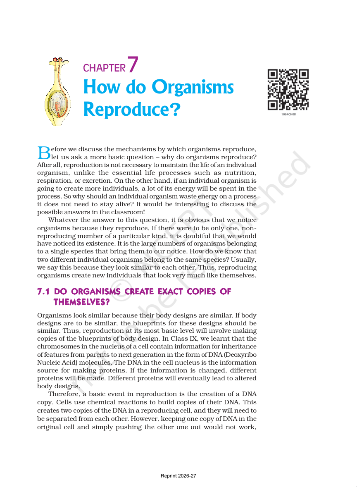
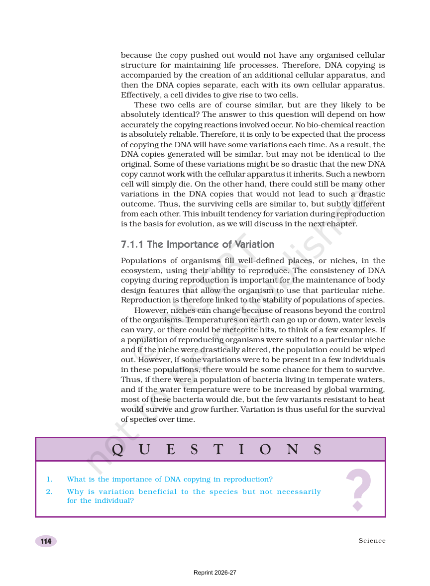
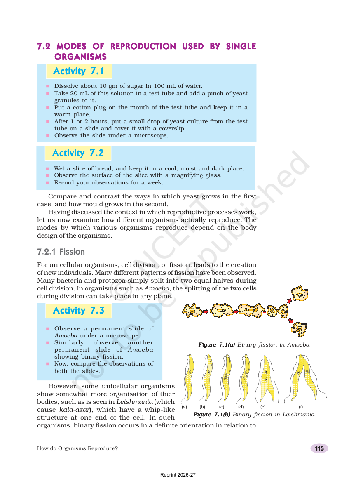
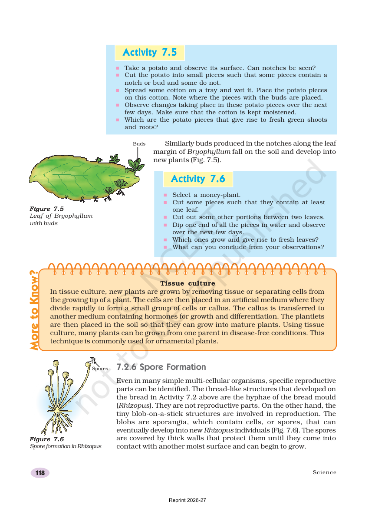
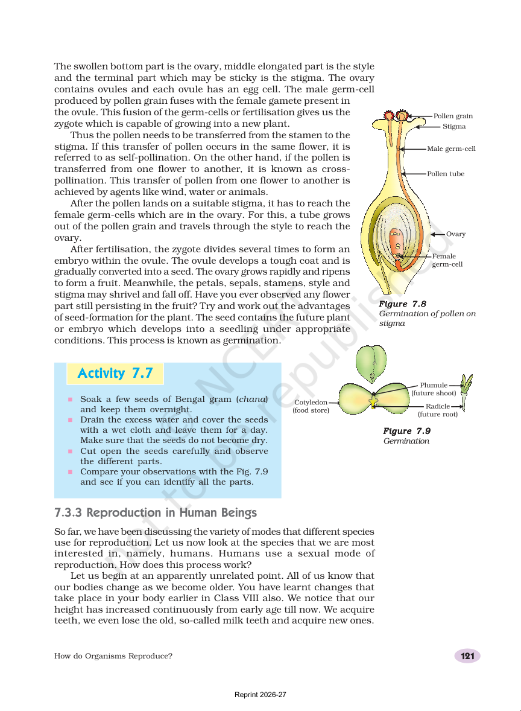
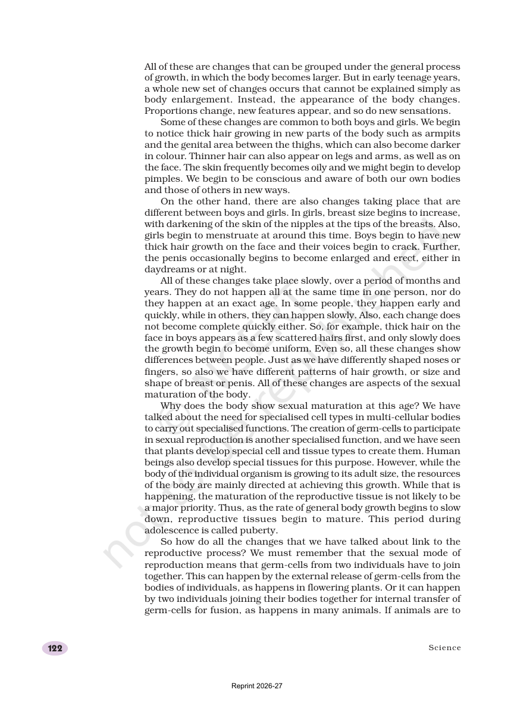
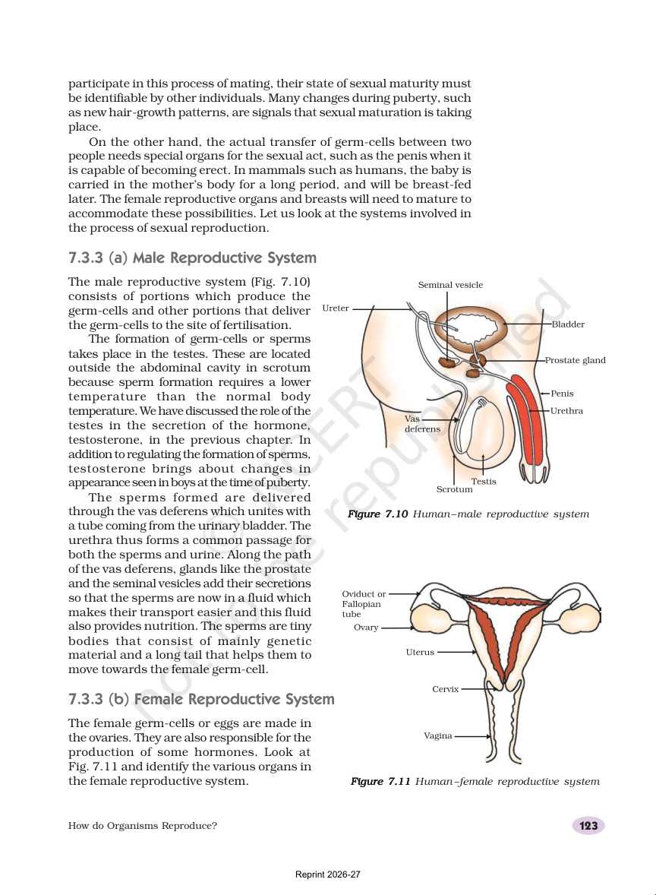
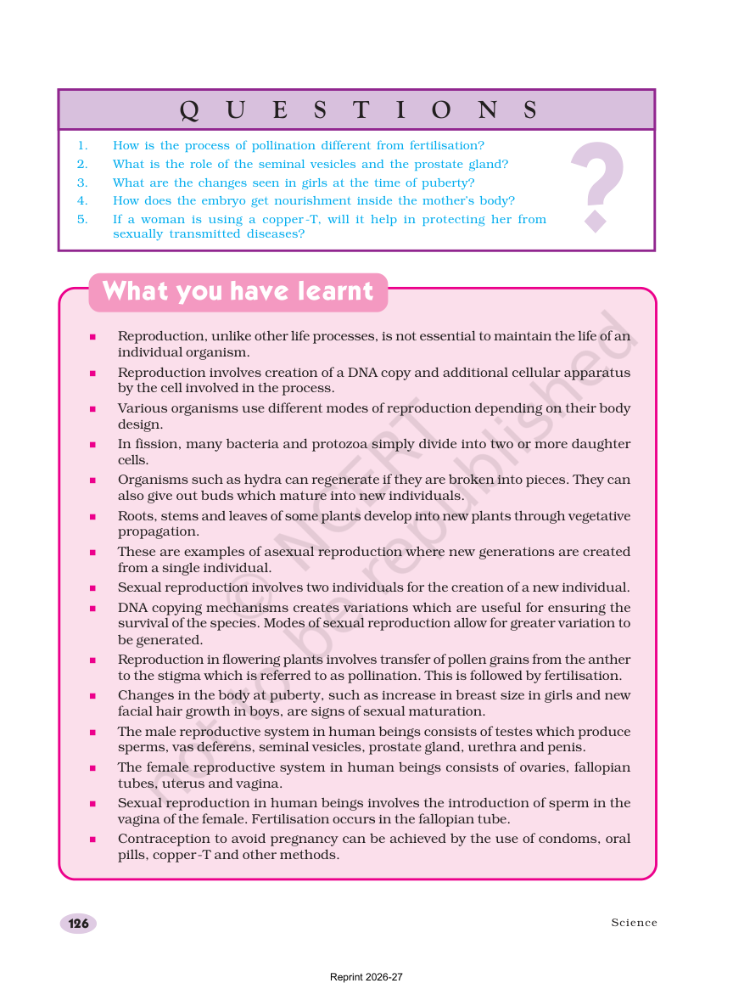

Reproduction is not needed for one individual to stay alive, but it is needed for a species to continue.
New individuals look like their parents, so the species keeps its body design from one generation to the next.
Reproduction keeps a species going.
New individuals look like their parents.
A species is easier to notice when many members exist.

The chapter opens by asking why living things reproduce at all.
DNA Copying Creates Variation
Reproduction begins with copying DNA. That copy is usually close to the original, but not always perfect.
Small changes create variation, and variation can help some members survive when the world changes.
DNA copying starts reproduction.
Small copy errors create variation.
Variation can help survival.

Pages explain how DNA copying and variation happen during reproduction.
Quick Check
Your answers are saved in this browser.
Why do organisms reproduce?
Reproduction is needed for the species, even though one individual can stay alive without it.
What is the first basic event in reproduction?
The chapter says reproduction starts with a copy of DNA.
What are small differences in copied DNA called?
Small changes during DNA copying are called variations.
Why can variation be useful for a species?
Variation can help a species survive when conditions change.
Do all reproducing organisms make perfect copies?
The chapter explains that DNA copying is never absolutely perfect.
M1: Asexual Reproduction
Read, look, then check yourself.
One Parent, Many Ways
Asexual reproduction uses one parent. The new individual comes from a single organism, so the process is often simple and fast.
The chapter covers fission, fragmentation, regeneration, budding, vegetative propagation, and spore formation.
Fission splits one cell into two or more cells.
Budding forms a small outgrowth.
Vegetative propagation uses roots, stems, or leaves.

The source pages show several asexual methods in simple organisms and plants.
Fragments, Buds, and Spores
Hydra can grow a bud that becomes a new individual. Some organisms can regenerate lost parts. Fungi and some plants use spores, which are tiny units that can spread easily.
Vegetative propagation is useful in plants because a root, stem, or leaf can grow into a new plant that keeps the same useful traits.
Hydra shows budding.
Planaria shows regeneration.
Spores help organisms spread widely.

Later pages focus on regeneration, budding, and spore formation.
Quick Check
Your answers are saved in this browser.
Which kind of reproduction uses only one parent?
Asexual reproduction needs only one parent.
What happens in fission?
Fission is simple splitting, common in bacteria and protozoa.
Which organism is famous for budding?
Hydra is the classic budding example in the chapter.
What is regeneration?
Regeneration means a body part or piece can grow into a complete organism.
Which plant method uses roots, stems, or leaves to make new plants?
Vegetative propagation is asexual reproduction in plants using plant parts.
M2: Sexual Reproduction in Flowering Plants
Read, look, then check yourself.
Pollination Comes First
Sexual reproduction in flowering plants begins with pollination, which is the transfer of pollen grains from the anther to the stigma.
The chapter uses the flower diagram to help you see where pollen starts, where it lands, and how the next steps create seeds and fruits.
Anther makes pollen grains.
Stigma receives pollen.
Fertilisation happens after pollination.

The source pages show flower parts and the movement of pollen grains.
Fertilisation Makes a New Beginning
After fertilisation, the ovule develops into a seed and the ovary develops into a fruit.
Because sexual reproduction mixes genetic material from two parents, the offspring can show more variation than asexual offspring.
Pollination moves pollen.
Fertilisation joins the gametes.
Seeds carry the embryo of the next plant.

Later pages connect pollen, ovule, seed, and fruit in a simple sequence.
Quick Check
Your answers are saved in this browser.
What is pollination?
Pollination is the movement of pollen grains from anther to stigma.
What happens after pollination in flowering plants?
The next main step after pollination is fertilisation.
Which flower part receives pollen?
The stigma is the pollen-receiving part of the flower.
What does the ovule become after fertilisation?
The chapter explains that the ovule develops into a seed.
Why does sexual reproduction usually create more variation?
Mixing material from two parents creates more variety in offspring.
M3: Human Reproduction and Health
Read, look, then check yourself.
Puberty Means the Body Is Maturing
Puberty is the time when the body becomes able to reproduce. Girls and boys both go through changes.
The male reproductive system includes testes, vas deferens, seminal vesicles, prostate gland, urethra, and penis. The female reproductive system includes ovaries, fallopian tubes, uterus, and vagina.

The chapter uses body changes at puberty as a sign of sexual maturation.
Fertilisation, Embryo, and Health
In human beings, fertilisation usually happens in the fallopian tube. The embryo gets nourishment from the mother through the placenta.
The chapter also talks about reproductive health and contraception. Condoms, oral pills, and copper-T are examples of methods used to avoid pregnancy.
Sperm is introduced into the vagina.
Fertilisation happens in the fallopian tube.
Reproductive health includes safe choices and protection.

The later pages explain fertilisation, the embryo, and ways to avoid pregnancy.
Quick Check
Your answers are saved in this browser.
What is puberty?
Puberty is the stage when the body matures for reproduction.
Where does fertilisation usually happen in human beings?
The chapter says fertilisation in humans usually happens in the fallopian tube.
Which organ produces sperms in males?
The testes are the male reproductive organs that produce sperm.
Which organ produces eggs in females?
The ovaries are the female reproductive organs that produce eggs.
What does a copper-T help with?
The chapter lists copper-T as one of the methods used to avoid pregnancy.